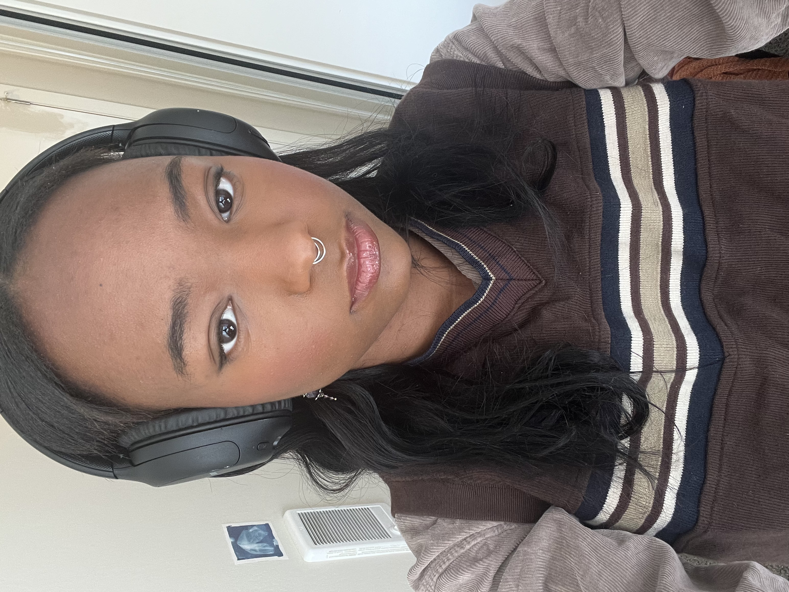

Hey! I'm Aryian Jones (pronounced uhryan)! Originally from Cleveland, OH, now
residing in the Bay Area as a CS major at University of San Francisco. AT USF,
I am a mentor for a freshman CS student. I am helping them navigate through
the struggles of being a freshman and encouraging them to engage with other CS
majors and recruiters.
As a CS major, I am hoping to become a Software Engineer or Web Developer. I have
projects and in-class assignments that fulfill both of those roles which can be
seen on my GitHub! Projects I am most proud of include this website, my Wordle
recreation project, and some of my current projects for my Full-Stack Web Development
Course.
In my free time, I can be found practicing guitar, hanging out with friends,
planning my life path, listening to music, and if it's a weekend, on a train
in California.
Contact me at acjones10@usfca.edu
